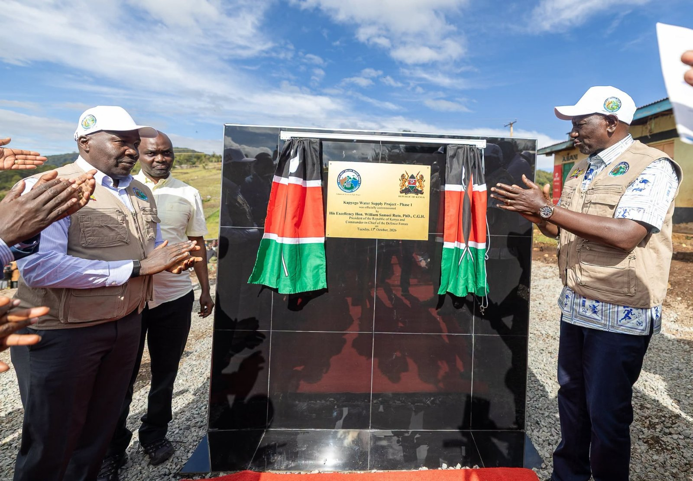

Ruto Promises Roads, Power and a Higher Milk Price in Elgeyo Marakwet
News
Elgeyo Marakwet County | Tuesday, 13 October 2026
President William Ruto used a rally in Elgeyo Marakwet County today to set out what his government has built and what it plans to deliver. He announced new KMTC student hostels, billions of shillings for roads, electricity for more than 10,000 households and a higher price for milk. He then turned to ethnic politics ahead of the 2027 General Election.
On infrastructure, the President said his government is building KMTC student hostels in the region, and he spoke of a 220-kilometre road project. He also touted the roads his administration has built across the country and said Sh21 billion has been allocated for roads in Elgeyo Marakwet. He addressed matters concerning contractors working on road projects as well. Many of these promises, however, are not new. In January 2025, Ruto announced a 200-bed hostel for the Kerio Valley KMTC campus. In December 2025, Deputy President Kithure Kindiki blamed stalled roads in the county on non-payment of contractors and promised that the Kapyego-Chesoi and Chesoi-Tirap-Embobut roads would be completed.
Power was another major theme. Ruto said the government will connect more than 10,000 houses to electricity under its last-mile connectivity programme. This also builds on an earlier pledge, since Kindiki had said Sh780 million was set aside to connect more than 9,000 homes in the county.
Turning to farmers, the President said new management at New KCC will raise the price paid for milk to Sh65 per litre. He has been raising that figure in recent weeks. Earlier this month, he said the price was Sh50 and heading to Sh60, and that the government would clear Sh8 billion owed by the processor. Even so, the sector faces pressure. Farmers and consumers have complained of shortages and rising prices, and figures cited in reports show that formal milk deliveries to processors fell from 84.4 million litres in June to 81.3 million litres in July.
Ruto also addressed higher education, speaking about the Tertiary Placement and Funding Bill, 2026. The bill would merge the Higher Education Loans Board, the Universities Fund and the TVET Funding Board into a single authority. The President has said every student placed in a public university or college will receive full funding. However, reports say the proposed model leans heavily on student loans.
He ended with a message on ethnic politics. Ruto has said before that he will not allow tribal politics to thrive in Kenya, and on Monday in Nandi he told residents that Kenya will vote as one people in 2027.
Today’s rally is part of an 11-day tour of six North Rift counties, with roads, housing, markets, hospitals and electricity featuring prominently on his itinerary. The schedule for the day included breaking ground for Kerio Valley KMTC student hostels, a water project and a market, and commissioning the Kipkuldul-Kapyego-Kamalei road. Nevertheless, the opposition has criticised the tour as a campaign for 2027, and with the election still about a year away, the President’s promises will be closely watched.